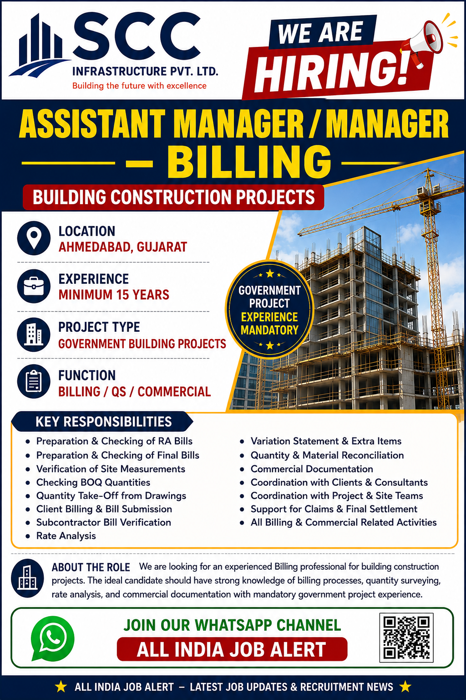

Assistant Manager / Manager – Billing
Ahmedabad, Gujarat

SCC Infrastructure Pvt. Ltd. is looking for an experienced professional for the position of Assistant Manager / Manager – Billing for building construction projects in Ahmedabad, Gujarat. This is a senior-level opportunity for candidates who have extensive experience in construction billing, quantity surveying, commercial management and project documentation.
The recruitment requirement specifies a minimum of 15 years of relevant professional experience. Candidates should have strong practical exposure to building construction projects and government project experience is mandatory. Professionals who have handled billing and commercial responsibilities for government building projects can consider this opportunity if they meet the other requirements.
The selected professional will be responsible for managing important billing and commercial activities. The position requires coordination with project managers, site engineers, quantity surveyors, consultants, clients, subcontractors and internal commercial teams.
The Billing Manager will be responsible for monitoring and managing project billing activities. The candidate should have the ability to understand project quantities, measurements, BOQ items and contractual requirements and convert site execution information into accurate billing documentation.
Government building project experience is specifically required for this position. Candidates should have practical knowledge of the documentation and commercial procedures used on government construction projects.
Experience with CPWD, PWD or similar government project procedures can be an advantage. Candidates should understand measurement records, bill preparation, supporting documents, variations, extra items, approvals and final account procedures.
Applicants who have previously worked with government departments, consultants or public infrastructure projects should clearly mention this experience in their CV because it is an important part of the recruitment requirement.
Strong knowledge of construction billing and quantity surveying is essential. The candidate should be able to review BOQs, calculate quantities, verify measurements and compare executed work with contract requirements.
Quantity take-off is an important part of construction commercial management. The professional should be able to understand drawings and specifications and prepare accurate quantities for billing purposes.
The candidate should also understand rate analysis and be able to review rates for construction activities. Knowledge of materials, labour, equipment and construction methods can help when evaluating additional or variation items.
Running Account Bills are normally prepared periodically according to work completed at site. The Billing Manager should ensure that claimed quantities are supported by proper measurements and project documentation.
Final Bills require detailed checking because they involve closing quantities, previous payments, deductions, variations and final settlement. Candidates with experience in final account preparation and closure will be valuable for this position.
Client billing requires coordination between the commercial team and the site execution team. The candidate should ensure that measurements and supporting documents are complete before submitting bills to the client or consultant.
The professional may also need to follow up on bill observations and coordinate with site engineers to correct discrepancies. Proper follow-up is important for maintaining project cash flow and avoiding unnecessary delays in certification.
Subcontractor bills should be checked carefully against actual work executed and approved measurements. The Billing Manager should verify quantities, rates, deductions and supporting records before recommending certification.
Good subcontractor billing management helps maintain accurate project costs and reduces the possibility of commercial disputes. Coordination with subcontractors and site teams is therefore an important part of the position.
Construction projects can involve changes in scope, quantities or specifications. The Billing Manager should be capable of identifying variations and preparing proper documentation for additional or extra items.
The candidate should maintain records of client instructions, revised drawings, measurements and applicable rates so that variation claims can be properly supported.
Reconciliation is another important responsibility. The candidate may need to reconcile client bills, subcontractor bills, quantities, materials and project records.
Accurate reconciliation helps identify differences early and supports proper project cost control. Senior billing professionals should be comfortable preparing reconciliation statements and investigating discrepancies.
This opportunity is suitable for experienced Billing Managers, Assistant Billing Managers, Commercial Managers, Quantity Surveyors and senior construction billing professionals.
Candidates should carefully compare their experience with the stated requirement of 15 years. Government building project experience is particularly important for this position and should be clearly highlighted in the CV.
📧 Application Email:
hr@sccinfrastructure.com
📞 Call / WhatsApp:
9924306028
Candidates should send an updated CV mentioning total experience, current location, government project experience, building construction projects handled and major billing responsibilities.
Candidates should verify the vacancy and recruitment process before sharing personal documents. Applicants should never pay unofficial recruitment fees, interview fees or selection charges to unknown persons.
Never share OTPs, ATM PINs, banking passwords or other confidential financial information with unknown recruiters. If any person asks for money in exchange for a job, candidates should independently verify the employer and recruitment agency before proceeding.
Applicants should keep their CV updated and make sure that important information such as total experience, project type, designation, government project experience, billing responsibilities and current location is clearly mentioned.
Senior billing and commercial professionals play an important role in construction projects because accurate billing directly affects project cash flow and commercial control. Professionals with extensive experience can use their knowledge of quantities, contracts, measurements and project documentation to manage complex billing requirements.
Working on building construction projects can also provide exposure to multiple departments and stakeholders. Senior professionals may coordinate with engineering, planning, procurement, accounts, site execution, clients and consultants. Such responsibilities can help professionals further develop their commercial and management skills.
SCC Infrastructure Pvt. Ltd. is looking for an experienced Assistant Manager / Manager – Billing for building construction projects in Ahmedabad. The advertised requirement is for professionals with a minimum of 15 years of relevant experience, including mandatory government building project experience.
Candidates with strong knowledge of RA Bills, Final Bills, BOQ, quantity take-off, rate analysis, client billing, subcontractor billing, variations, reconciliation, claims and final settlement should review the opportunity and apply if they meet the requirements.
The recruitment information published on this page is based on the supplied vacancy poster. Candidates should confirm the latest vacancy status, selection process, salary, joining conditions and other employment terms directly with the concerned employer before making a final decision.